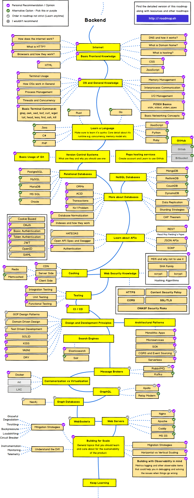

Учить всё и сразу
Представим, что новичок решил создать свой сайт. Он изучил html, css, и умеет верстать, но еще к бекенду не переходил.
Перед ним огромный список тем, которые необходимо изучить: синтаксис, объектно-ориентированное программирование, паттерны, фреймворки и куча других тем.
